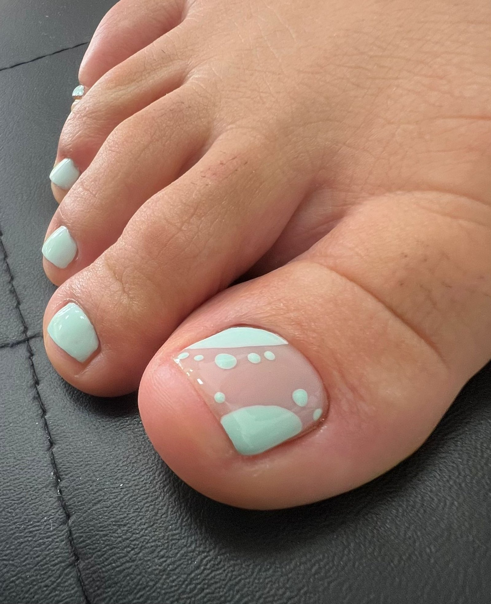
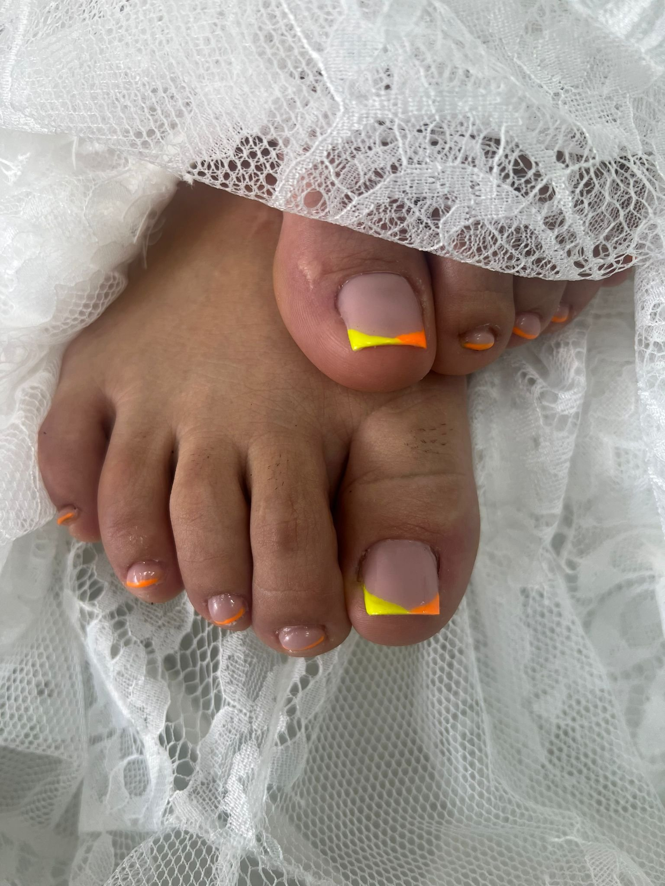
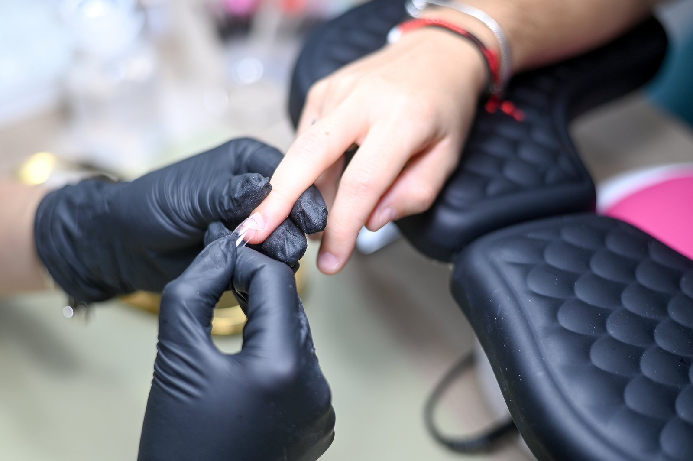
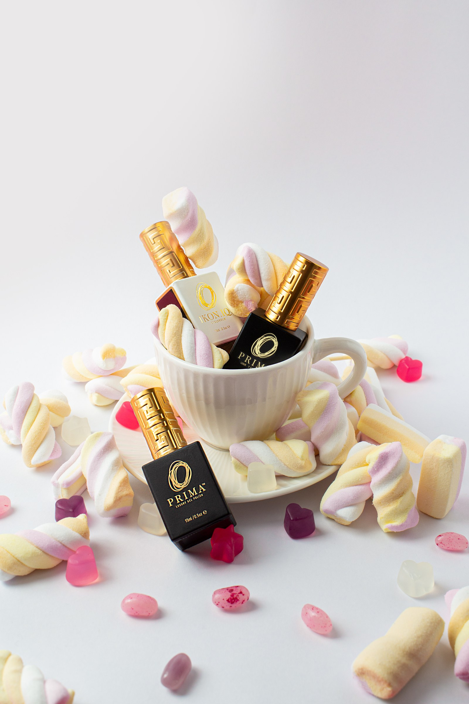
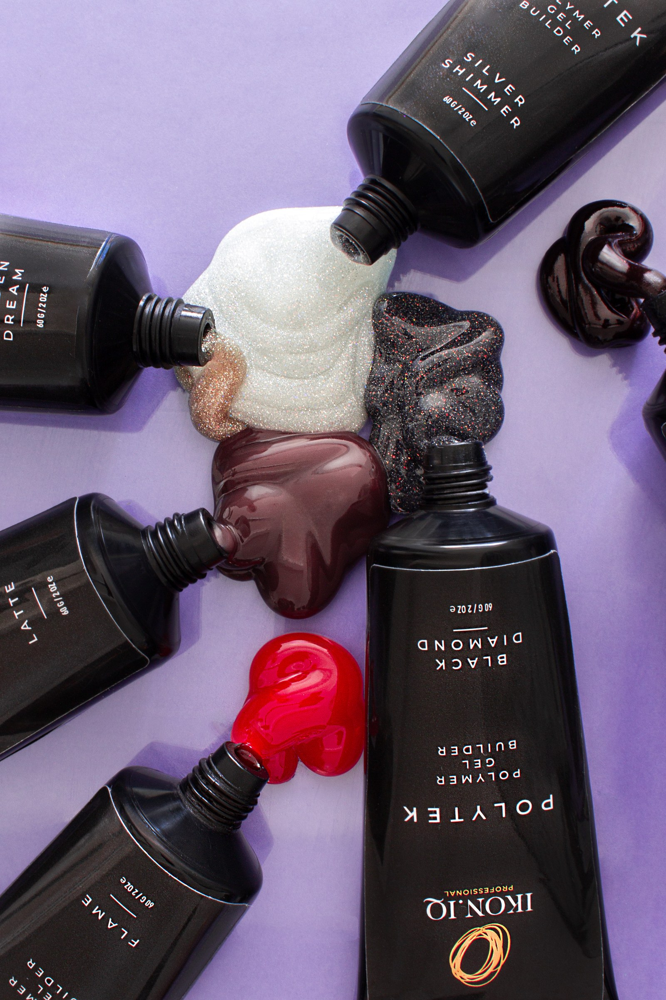

Materiales que
uso en cabina.
Distribuidora oficial Ikoniq Nails en Lucena. Los mismos productos que aplico con mis clientas, disponibles para tu uso.
Productos profesionales
para todas.
Ikoniq Nails es la marca con la que trabajo en cabina. Cuando empecé a distribuirlos fue porque creo en ellos, no porque me lo pidiera nadie. La compra la gestionas directamente en su tienda oficial — yo solo te puedo orientar sobre qué producto se adapta mejor a lo que buscas.
Compra y envío gestionados por Ikoniq Nails. Para asesoramiento personalizado, consúltame por WhatsApp.
Catálogo
de productos.
Una selección de los productos que más trabajamos. Para comprar cualquiera de ellos, accede a la tienda oficial con el botón de cada tarjeta.

Esmaltes gel — Colección temporada
Alta pigmentación en una sola capa. Colores que duran semanas sin desportillarse. Disponible en más de 200 tonos, desde los más clásicos a los más atrevidos de temporada.
Comprar en Ikoniqnails →
Esmaltes neón y brillo
Para las que no tienen miedo al color. Tonos neón, cromo y multireflejo con acabado profesional. Perfectos para la temporada de verano o para las que siempre van con color.
Comprar en Ikoniqnails →Base coat profesional
Adhesión perfecta del esmalte, protección de la uña natural y mayor duración del esmaltado. Formulada sin elementos que dañen la uña con el uso continuado.
Comprar en Ikoniqnails →
Top coat acabado brillo o mate
El paso final que marca la diferencia. Disponible en brillo intenso o mate satinado. Sella el color y añade duración al esmaltado semipermanente hasta 3–4 semanas extra.
Comprar en Ikoniqnails →
Línea PRIMA — colores temporada
Colores estacionales de la línea PRIMA. Pigmentación alta, cobertura en 2 capas, duración hasta 3–4 semanas. Ideal para uso profesional o para mantener tus manos entre citas.
Comprar en Ikoniqnails →
POLYTEK — gel constructor profesional
Gel builder POLYTEK en varios tonos (Latte, Flame, Dream, Black Diamond, Silver Shimmer…). Materiales de construcción para extensiones de uña con acabado natural. Consulta compatibilidad con tu nivel de experiencia.
Comprar en Ikoniqnails →Recomendaciones
según tu rutina.
No todos los productos son para todos. Estas son las líneas más habituales según lo que buscas.
Semipermanente en casa
Necesitas gel, base, top y lámpara UV. Empieza con colores neutros y una base buena. Escríbeme y te digo el kit básico.
Larga duración
Top coat de calidad + base adhesión + gel de alta viscosidad. El secreto está en el curado, no en poner capas infinitas.
Nail art y decoración
Para diseños necesitas un top coat viscoso que “enganche” los elementos. La línea de foils y piedras de Ikoniq es de las mejores del mercado.
Uñas débiles o dañadas
Empezar con una base nutritiva y gel de baja densidad. Antes de cualquier compra, cuéntame el estado de tus uñas y te oriento.
?No sabes qué producto
te conviene más?
Pregúntame por WhatsApp. Te digo qué usar según tu nivel, tus uñas y lo que buscas. Sin compromiso, sin listas de compra infladas.
Preguntar por WhatsApp